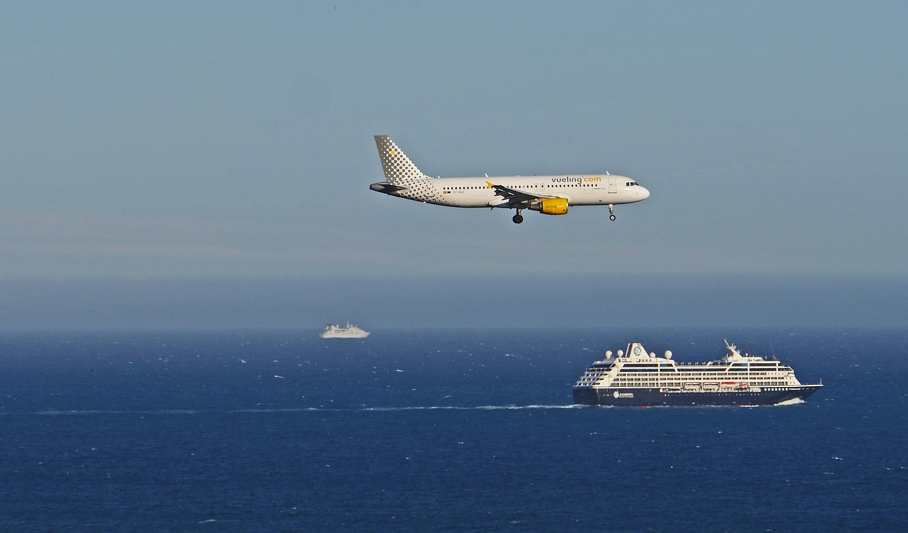

Getting to and Around Taniti
Fly in, cruise to Yellow Leaf Bay, or zip around Taniti City with ease using buses, bikes, or rentals. Check out the options below to plan your trip!
To Taniti
- Air: Land at our small airport near Taniti City, welcoming small jets and propeller planes from Pacific hubs. An expansion to handle larger jets is set for 2028, making access even easier. Taxis and car rentals are ready at the terminal for a smooth arrival.
- Cruise Ship: A cruise ship docks weekly at Yellow Leaf Bay’s safe harbor for an overnight stay. It’s a great way to get a taste of Taniti’s beaches and culture in a short visit. The port’s welcome center has schedules and tips for shore activities.

On the Island
- Public Buses: Run in Taniti City from 5 a.m. to 11 p.m. daily. Timetables are posted at major bus stops.
- Private Buses: Reach rural areas with private bus services. Book through operators in Taniti City.
- Taxis & Rentals: Find taxis or rent cars near the airport for flexible travel. Visit rental agencies at the terminal.
- Bikes & Walking: Rent bikes with helmets (required by law) in Taniti City or walk the flat streets of Taniti City and Merriton Landing.